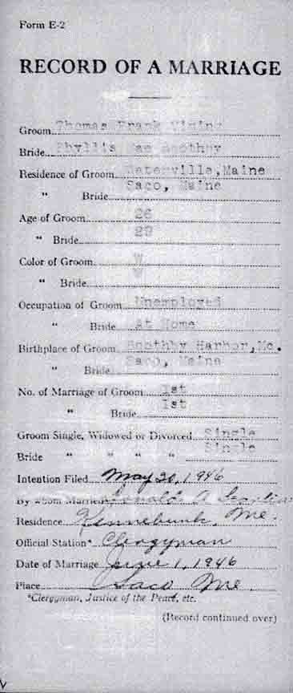
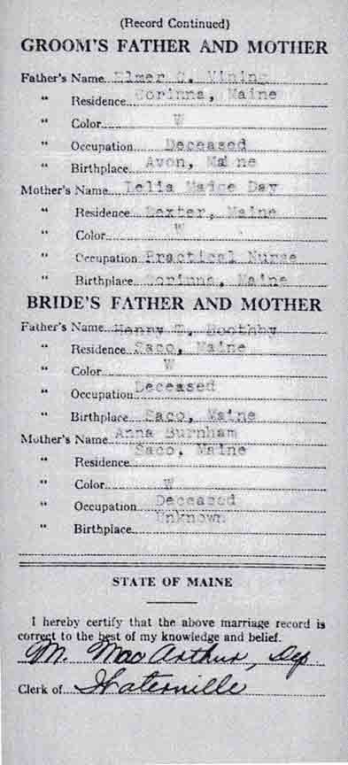
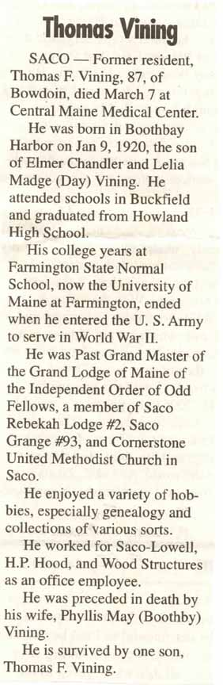
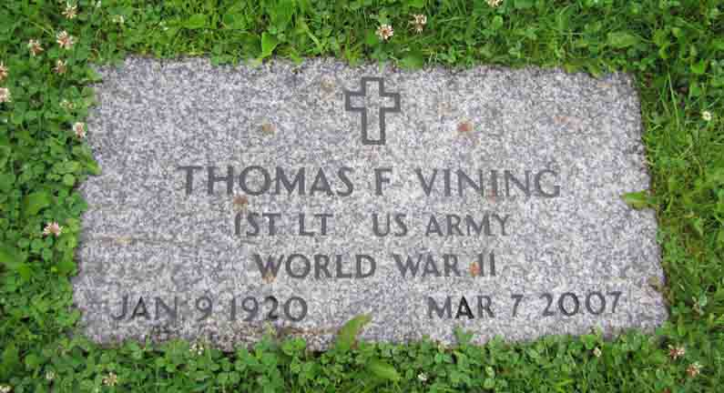
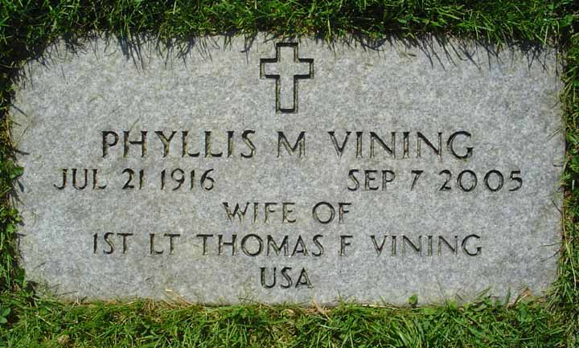

Documentation for Thomas Frank Vining - Phyllis May Boothby
Thomas Frank Vining and Phyllis May (Boothby) Vining:
Marriage Data
Marriage record for Thomas Frank Vining and Phyllis May Boothby (from Maine State Archives):


Death Data
Obituary for Thomas Frank Vining:

Gravestones for Thomas Frank Vining and Phyllis May (Boothby) Vining, in Veterans' Cemetery, Augusta, Maine:

